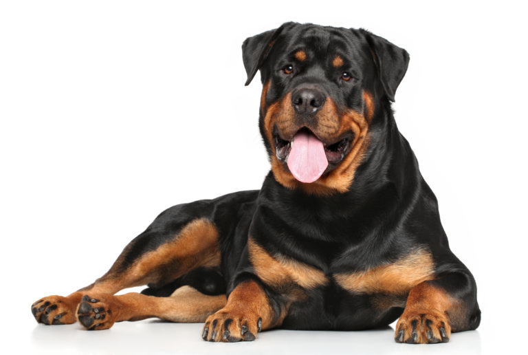

Rottweiler

A rottweilernek nincsenek északi ősei. Amikor a római légiók visszavonultak Észak-Európából,
otthagyták a kutyáikat, és ezek az erős kutyák hasznossá váltak. A középkorban Rottweil városában
kezdték ezeket a kutyákat helybéli juhászkutyákkal keresztezni. Így jött létre az úgynevezett rottweiler
mészáros kutya, melyeket vágómarhák terelésére használtak. Ezeket a kutyákat nagy előszeretettel vetették be a harcok során.
A római légiók harci kutyájaként jutottak el ősei Németországig, ahol - Rottweil városka környékén, az 1900-as évek elején alakult ki mai formájuk.
Jellemzőit
- Marmagasság:61–68 cm, a szukáké 56–63 cm.
- Tömege: A szukák tömege kb. 42 kg, a kanoké 50 kg
- Mancs: kerekded, rövid, jól zárt, a talppárna nagyon kemény, rugalmas, a karom rövid, erős, sötét színű. A farkaskörmöket a néhány napos kölyöknél már el kell távolítani.
- Színezet: fekete-barna.
- A rottweiler-tenyésztés arra törekszik, hogy egy olyan erőtől duzzadó fajta fejlődjön ki, amely súlyos egyéniséget tükröző összmegjelenésében ne legyen híján nemes vonásoknak.
- Szmilysége:Barátságos, békés alaptermészetű, jó idegzetű, hűséges, engedelmes, kitűnően tanítható. Megjelenése erőt sugároz, magabiztos, kiegyensúlyozott, szereti a gyerekeket.